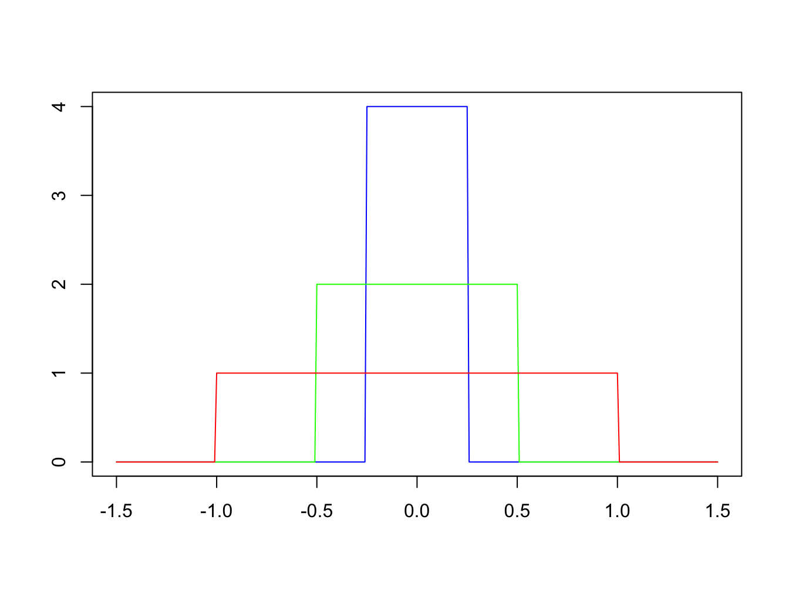

The Dirac Delta Function#
Some Motivation#
Before we get to a definition, lets just think about the mean value theorem for a continuous function \(f(x)\) over some interval \(x \in [a,\,b]\):
So if we define a function \(D(x)\) using the piecewise definition:
If we therefore integrate this function alongside a continuous function \(f(x)\) over the same range:
Let’s now think about shrinking his range down to \(x \in[a,\,a+\epsilon]\) and find the limit of this as \(\epsilon \rightarrow 0\).
Recall the fundamental theorem of calculus (FTC) for definite integrals:
So if we pick some function \(f(x) = g'(x)\), lets find:
Which using the FTC reduces to:
Given that \(g=g(x)\), we can think of this as a function expression in \(x\) evaluated at a particular point \(x=a\), so:
But now we see that is the definition of the derivative of \(g(x)\)! So this means:
Which is the original function in the integrand, but evaluated at \(x=a\):
The function which has this particular property is known as the Dirac Delta function \(\delta(x)\). It is perhaps poor use of terminology to call this a function, it is best thought of a distribution at best. The definition of \(\delta(x)\) does not really live outside of the integral definitions, but its properties can be well understood when it acts on other functions.
Definition#
Let us introduce a function \( \delta(x) \) with properties:
where constant \( a \) is finite and
This function is also called the impulse function because it can be used to represent external perturbations: finite in magnitude and infinitely short in duration.
The \( \delta \)-function belongs to a class of generalized functions, i.e., its properties are determined by the properties of integrals with probe functions \( f(x) \):
Where:
The function \( f(x) \) is defined on a required interval of \( x \), e.g., \( x \in (-1, +1) \);
\( f(x) \) and all of its derivatives are continuous and finite functions of \( x \);
\( f(x) = 0 \) for all values of \( x \) outside of some finite interval \( [x_1, x_2] \).
More motivation#
Consider the following step-function:
Clearly we can see that an important property of this function is that
As \(k\) increases, \(f_k(x)\) gets taller and thinner (see the figure below). We define the Dirac delta function to be
although, of course, this limit doesn’t exist in the usual mathematical sense. Effectively \(\delta(x)\) is infinite at \(x = 0\) and zero at all other values of \(x\). The key property however, is that its integral (area under the curve) is one.

Sifting property of the delta function#
The delta function is most useful in how it interacts with other functions. Consider
where \(g(x)\) is a continuous function defined over \((-\infty, \infty)\). Using our definition of the delta-function we can rewrite this as
for some \(\bar{x}\) in \([-1/k, 1/k]\), using the mean-value theorem for integrals. Clearly, as \(k \rightarrow \infty\), we must have \(\bar{x} \rightarrow 0\). The expression above simplifies to
We have therefore established that for any continuous function \(g\):
This result can easily be generalized to
The Gaussian distribution.#
The normal distribution, also known as the Gaussian distribution, is given by
lets simplify, centre on the origin so \(\mu = 0\) and take \(2\sigma^2 = a^2\):
in the limit of \(a \rightarrow 0\), the function \( g(x, a) \) behaves similarly to \( \delta(x) \), we can see this in the figure below:

This means that:
Yet, we will not equate \( \delta(x) \) and \( \lim_{\sigma \to 0} g(x, a) \) because \( \delta(x) \) is a generalised function defined via its integral definition with other functions, whilst \( g(x, a) \) is a function defined in the usual sense.
Properties of the \( \delta \)-function#
It follows from the definition that a product of \( \delta(x - a) \) and any finite function is zero everywhere except at \( x = a \). Hence,
To find \( \delta(- x) \), we need to consider the integral
After substituting \( x = -t \) and \(\mathrm{d}x= -dt \), we have
Thus,
For any probe function \( f(x) \), we obtain:
Calculating \( \delta(ax) \)#
Similarly, to calculate \( \delta(ax) \), we need to consider the integral:
Lets start with \(a > 0\), substitute \( ax = t \), then \(\mathrm{d}x= \frac{dt}{a} \):
Hence,
It also follows that for \( a < 0 \):
from our earlier property. This therefore means that:
By combining \( \delta(-x) = \delta(x) \) and \( \delta(ax) = \frac{1}{a} \delta(x) \), we obtain
for any \( a \in \mathbb{R}\).
Laplace transform of the Dirac delta function.#
Evaluate \( L[\delta(t - a)] \):
Derivatives of the Dirac delta function.#
To attach meaning to \( \delta'(x - a) \), consider
The term \( \left[f(x) \delta(x - a)\right]_{-\infty}^{+\infty} \) equals zero because probe functions \( f(x) = 0 \) for all \( x \) outside of some finite interval \( [x_1, x_2] \).
Similarly, we can find the nth derivative of \( \delta(x - a) \) by calculating:
Integrating by parts \( n \) times gives:
Other generalized functions.#
Consider the following examples:
\( x \delta(x) \):
\( x \delta'(x) \):
\( x^2 \delta''(x) \):
Thus,
\( x \delta(x) = 0 \),
\( x \delta'(x) = - \delta(x) \),
\( x^2 \delta''(x) = 2 \delta(x) \).
The (Heaviside) Step Function#
Lets think about a different function for the moment, a simple step function entered on the origin:
We will return to \(H(0)\) shortly, but it does not change the fundamental concepts of this function.
The first property to note about the step function is that it has a sifting property also, so if we wish to restrict a function too a specific open ended range, such as \(x > a\), we can just use:
And if we want to include a closed range of values \(a < x < b\) we can include another step function:
This differs from the Dirac delta function which only picks out a value of a function \(f(x)\) at \(x=a\).
The second property to note is that the derivative of the step function is zero almost everywhere - except at the point where the jump occurs, so we can think of the step functions derivative as being related to the Dirac delta function:
Laplace Transform#
Now that we have a new function to find the Laplace transform of: